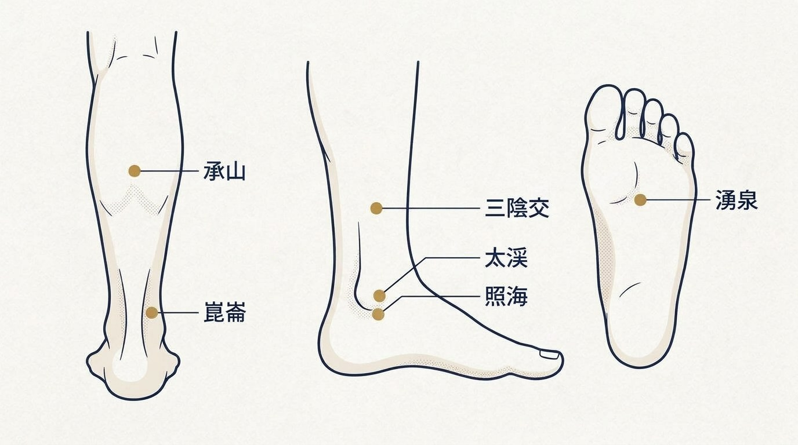

足底筋膜炎の鍼灸
朝の一歩目や歩行時にかかと・足裏が痛む足底筋膜炎を、足底腱膜とふくらはぎ・骨格バランスから改善する解説。


院長YouTube解説・関連動画
足底筋膜炎とは足底腱膜の炎症
足底腱膜炎は、足の裏の厚い組織である足底筋膜炎が炎症を起こす病気です。足底筋膜は、足の指の根元にかけて広がる靭帯で、歩くときの衝撃を吸収し、アーチを支える役割をしています。
その足底筋膜に過度な負荷がかかり足底筋膜炎が引き起こされるといわれています。足裏の筋肉が常に引っ張られている状態になり、負担に耐え切れなくなることで炎症反応が起こってしまいます。痛み方は人によってそれぞれですが、急に痛くなることもあります。
ランナーに多い病気ですが、サラリーマンやO L、運動していない主婦など幅広い人に発症が見られ多くの人が悩んでいる病気です。
当院に来院する足底筋膜炎の人は、なかなか改善が見られない足底筋膜炎の人ばかりです。
足底筋膜炎の主な症状は踵の痛み
- •かかとや足の裏が痛くて歩くのが辛い
- •部活やスポーツをする際練習開始時に痛みが出やすい
- •朝起きた時や長時間座った後立ち上げるときに症状が出やすい
- •活動していると徐々に痛みは和らぐが1日の終わりになると再び悪化する
足底筋膜炎の痛みは通常、踵の内側に最も強く出ますが、好発部位は３か所あり、踵の次に土踏まずや足の根元に症状が出やすいです。
足底筋膜炎は走れば走るほど、歩けば歩くほど足の裏が痛くなります。また、筋肉の攣りがふくらはぎまでくることもあります。
足底の痛み: 最も一般的な症状で、特に足を踏み出すときや長時間立ち続けた後に感じられます。通常は足の裏側やかかとの付近に痛みが生じます。
朝起きたときの痛み: 足底腱膜炎は、朝起きたときや長時間座ってから立ち上がるときに特に痛みを感じやすい傾向があります。これは足底腱膜が休んでいる間に収縮し、再び伸張するときに痛みが生じるためです。
歩行時の痛み: 足底腱膜炎が進行すると、歩行中にも痛みを感じることがあります。特に長距離を歩いたり、激しい運動をしたりすると痛みが増すことがあります。
足底の硬化: 腱膜炎が慢性化すると、足底に硬化や厚みが生じることがあります。これは足底組織の炎症や傷害による反応です。
赤みや腫れ: 足底の腱膜が炎症を起こすと、周囲の組織が赤く腫れることがあります。これは痛みや不快感と共に現れることがあります。
足底筋膜炎に似ている症状が現れる病気
・足根管症候群
・腰椎椎間板ヘルニア
・腰部脊柱管狭窄症
・細菌感染症
・関節リウマチ
・脂肪体の萎縮
・成長痛
足底筋膜炎の主な原因は、過度なストレスや繰り返しの圧力
足底腱膜は踵から足の指の根元にかけて広がる靭帯で歩くときの衝撃を吸収し、アーチを支える役割をしています。
主な原因は、過度なストレスや繰り返しの圧力で、長時間の歩行や立ち仕事、運動不足、不適切な靴の使用や体重の増量、扁平足などの足のアーチの異常などによって起こります。
高いアーチになっている靴を履いたり、ジャンプやランニングなどのオーバーユースが起こったり、長年の癖によって全身の骨格の乱れたりすることでも腱が変性したり、微小断裂や炎症が発生したり、踵に負担がかかったりして発症することもあります。
過度な負荷やストレス: 長時間の立ち仕事や長時間の歩行、激しい運動など、足底に過度の負荷やストレスがかかることが足底腱膜炎の主な原因の一つです。これにより、腱膜に微小な損傷が生じ、炎症が起こります。
筋力の不均衡: 足底周辺の筋肉や腱の不均衡が足底腱膜炎を引き起こす可能性があります。例えば、足底の筋肉やアキレス腱が弱い場合、足底腱膜に余分な負荷がかかりやすくなります。
過度なストレッチや振動: 足底を過度にストレッチしたり、急激な動きや振動が足底に加わることで、腱膜に負荷がかかり、炎症が引き起こされることがあります。
足部の異常: 足のアーチが平坦であったり、過度の内反足や外反足、足底の異常な動きがある場合、足底腱膜炎のリスクが高まる可能性があります。
過体重: 過体重や肥満の場合、足底にかかる負荷が増加し、足底腱膜に過度のストレスがかかりやすくなります。
下腿と踵骨を軸とし、アライメント動作を行います。回内動作で疼痛が起こるか、回外動作で疼痛が起こるかをチェックし、好発部位がどこなのかの特定を行います。回内であれば中央部、回外であれば足底腱膜の起始部で炎症が起こっていると確認できます。
足底筋膜炎の改善には、痛みの管理と足底腱膜炎の回復のどちらも必要になります。
痛みの管理では、湿布を貼ったりアイシングされたりロキソニンなどの痛み止めを飲むことなどがあります。足底腱膜炎の回復はタオルギャザーと言ってアーチを一生懸命作ってあげたり超音波で当てて痛みを取ったりする方法があります。
重症の場合はステロイド注射や手術を行うこともあります。当院にステロイド注射をした人は１名いましたが、手術まで行った人はいません。
手術を行うケースには、踵骨棘という骨棘が踵に出ているケースが多いです。骨棘が足底腱膜を刺激することで痛みが起こります。この場合、痛みが全然取れないため、手術が改善のための選択肢に入ります。
半年以上続く場合は、日常生活の見直しや足のアーチ、骨盤の調整、総合的なアプローチが必要になります。放置すると足底筋膜炎が再発しやすくなり、歩行量の減少や運動量の低下によって筋肉や柔軟性が失われてしまうため、人生の質が低下してしまいます。
足底筋膜炎で当院に来院される人はほとんどが重症化しています。
重症化のパターンは２つです。
1.痛いところが腫れ上がっている
2.骨棘ができる
重症化をしてもきちんと改善を行うことで改善します。骨棘があっても手術をしなくても良いこともあります。
骨に異常がある場合もあります。その場合は、改善が難しいです。ただし、骨に異常があって痛みを起こしている場合と骨の異常と痛みが関係ない場合があります。病院に行くと、医者は骨棘ができて足底腱膜が押されて地面にあたって痛みが出るという判断を行います。これは間違ってはいませんが、痛みが取れればそれで良いと考えることもできます。
足底腱膜炎は痛みがなければゴールです。改善しきれば再発はありません。
安静: 炎症が引き起こっている間は、足への負荷を軽減するために安静にすることが重要です。長時間の立ち仕事や激しい運動を避け、足を休めましょう。
アイシング: 痛みや腫れを軽減するために、炎症部位に氷を当てるアイシングを行います。氷を直接肌に触れさせないようにし、氷パックやタオルで包んで数分間当てます。
ストレッチと筋力トレーニング: アキレス腱や足底の筋肉の柔軟性を高め、強化するためのストレッチや筋力トレーニングを行います。これにより、負荷を分散させ、腱膜にかかる負荷を軽減します。
適切な靴の選択: 足底腱膜炎の改善や再発を防ぐために、足にフィットし、適切なサポートを提供する靴を選びます。適切なアーチサポートやクッショニングが重要です。
足底のサポート: 足底にサポートを提供するために、アーチサポートや足底のインソールを使用します。これにより、足底にかかる負荷を均等に分散し、痛みを軽減します。
物理的方法: 物理的な方法やマッサージなどの手段を利用して、痛みや炎症を軽減します。電気刺激や超音波などが有効な場合があります。
医師の指示に従う: 専門家の指示に従い、適切な改善方法やリハビリテーションを受けることが重要です。重度の場合には、抗炎症薬や注射などの改善方法が必要になる場合もあります。
当院では骨の膜に対して鍼灸を行います。足底腱膜炎では足の裏が痛くなりますが、基本的に測定腱膜炎の痛みは骨の膜からきています。そのため、骨の膜にくっついている神経の興奮が落ち着けば痛みはひきます。鍼灸で神経の興奮を落ち着かせることで痛みが取れると考え、施術を行なっています。
パターンを見分けるためには痛いところを触り、熱を持っているか持っていないかで判断を行います。熱を持っている場合は測定腱膜炎、熱を持っていない場合は足の骨の神経の興奮と判断を行います。
触って熱を持っているかを見て熱を持っていたら徹底的に氷嚢で冷やしてその熱を取るように仕向けることが大事です。
触って熱を持っていない場合、熱が引いた人は足の裏に対して自分の指で痛いところをぐりぐり押しましょう。骨の膜まで刺激を届けることが必要なため、全体的に押すのではなく痛い場所のみを全体重で削るように押してください。
神経の興奮を取ることが大事であるため、刺激を与えて落ち着かせることをメインで行います。
痛いところを押すのは億劫であるがそのくらい行わなければ楽になりません。骨棘ができていても痛みは改善します。当院に足底筋膜炎で来院した人で改善していない人はいません。
1番重症な人は3年痛みがあったが改善しました。足底筋膜炎の改善で当院に来院した場合、施術後に痛みがパッとなくなるのではなく薄くどんどん消えていくという特徴があります。最終的には、何かあるが気にならない程度になります。
ツボの押し方
水泉は、内くるぶしとかかとを結んだラインの真ん中にあるツボです。
押すときは、親指を使って押します。響くような強さで押してゆっくり離しましょう。
僕参は、外くるぶしとかかとを結んだラインの真ん中にあります。
押すときは、1回10秒ほどかけて押しましょう。1日3回押すことをお勧めします。お灸を行うこともお勧めです。強い痛みを感じる場合は無理はしないようにしましょう。
照海は、内くるぶしの1番高いところから親指の幅分だけ真下のくぼんでいる場所にあります。
押すときは、片手で弱めに押しましょう。上手に力が入らない場合は両手の親指を重ねて押しても良いです。気持ち良いと感じる強さで押すことが大事です。
▼ 詳しく知りたい項目だけタップして開けます（全項目の医学解説を収録）
01. 原因とメカニズム
なぜ症状が起きるのか・鍼灸の作用機序を読む
▼
01. 原因とメカニズム
なぜ症状が起きるのか・鍼灸の作用機序を読む
かかとから足指の付け根へ広がる「足底腱膜」に、長時間の立ち仕事・ランニング・合わない靴・扁平足やアーチの崩れ・全身の骨格の乱れなどによる過度な張力が繰り返しかかり、微小断裂や炎症が生じることで発症します。
なぜ鍼灸で改善へ向かうのか？（作用機序の図解）
足底筋膜炎に対する鍼灸は、トリガーポイント解放と疼痛抑制系の作用機序を通じて、お体本来の回復力を引き出します。
手技では届きにくい深層筋の硬結（トリガーポイント）へ繊細な鍼で直接刺激を届けます。
CGRPや一酸化窒素の放出により微小血管が拡張し、滞っていた発痛物質の洗い流しを促します。
脊髄後角で痛み信号を遮断し、脳幹からの内因性鎮痛物質（エンドルフィン等）の働きを高めます。
防御性の筋スパズムが解け、関節可動域と本来の動きやすさが段階的に回復します。
02. よくあるお悩み
このような症状はありませんか？（4項目）
▼
02. よくあるお悩み
このような症状はありませんか？（4項目）
- ✓朝起きて最初の一歩や、長時間座ったあとに立ち上がるときに踵が強く痛む
- ✓かかとの内側・土踏まず・足指の付け根が痛く、歩くのがつらい
- ✓ランニングや立ち仕事を続けるほど痛みが増し、1日の終わりに悪化する
- ✓インソールや湿布、マッサージを試しても何ヶ月も（あるいは何年も）治らない
03. 当院の施術アプローチ
施術の進め方・改善のポイントを見る
▼
03. 当院の施術アプローチ
施術の進め方・改善のポイントを見る
04. ツボ詳細・セルフケア一覧
ふくらはぎ・足首・足裏のツボ図解とセルフケア（6穴）
▼
04. ツボ詳細・セルフケア一覧
ふくらはぎ・足首・足裏のツボ図解とセルフケア（6穴）
実際の施術ではお一人おひとりの体質・症状に合わせて選穴しますが、ふくらはぎ・足首・足裏（アキレス腱炎・足底筋膜炎・捻挫等）の筋骨格系トラブルの臨床でよく用いられる代表的なツボの目安です。
| ツボ名 | 位置の目安 | 主な狙い | セルフケアの注意点 |
|---|---|---|---|
| 承山（しょうざん） | ふくらはぎの中央、アキレス腱から筋肉へ切り替わるくぼみ | こむら返り・アキレス腱や足底筋膜への牽引負担軽減 | 立位で強く押さず、座ってふくらはぎを緩めた状態で押します。 |
| 三陰交（さんいんこう） | 内くるぶしの上から指4本分上、すねの骨の後ろ際 | シンスプリント・下腿内側の循環改善と冷え・むくみケア | 妊娠中の方は強い刺激を控え、優しく温める程度にします。 |
| 太渓（たいけい） | 内くるぶしとアキレス腱の間にあるくぼみ | アキレス腱周囲炎・足首の柔軟性回復と局所血流サポート | アキレス腱自体を強くつままず、くぼみに指を添えて優しく押します。 |
| 崑崙（こんろん） | 外くるぶしとアキレス腱の間にあるくぼみ | 足関節捻挫後のこわばり・踵やふくらはぎ外側の痛みケア | 腫れや内出血がある捻挫直後は安静・冷却を優先してください。 |
| 照海（しょうかい） | 内くるぶしの真下にある小さなくぼみ | 足首内側の安定化・扁平足や足底の疲労回復 | 足首を軽く回しながら優しく刺激すると緩みやすくなります。 |
| 湧泉（ゆうせん） | 足裏の中央よりやや前、指を曲げたときにできるくぼみ | 足底筋膜炎の緊張緩和・足裏の疲労と冷え改善 | 足裏に強い炎症・激痛がある時期は患部圧迫を避け、ふくらはぎ側からケアします。 |
05. 医学的根拠・国際査読論文（PubMed / Cochrane）
科学的エビデンス・出典リンク一覧（3件）
▼
05. 医学的根拠・国際査読論文（PubMed / Cochrane）
科学的エビデンス・出典リンク一覧（3件）
国際的な医学データベース（PubMed・Cochrane等）で報告されている足首・足底腱膜炎・アキレス腱領域の代表的な査読済み鍼灸研究をまとめています（標準治療との併用や研究上の限界を含めて正確に掲載）。
| 年・研究デザイン | 対象・規模 | 主な結果 | 限界・出典 |
|---|---|---|---|
| 2017年 系統的レビュー | 足底腱膜炎（かかと痛） | 4〜8週間の短期的な疼痛（VAS）軽減と少ない副作用を報告。 | 8週以降の長期効果についてはエビデンス不足。 Acupunct Med (PMID: 27526703) |
| 2020年 メタ解析 | 急性足関節捻挫 17研究 | RICE処置単独と比較し疼痛緩和および回復率向上の傾向を示唆。 | 試験の質と異質性から大規模RCTが必要。 Evid Based Complement Alternat Med (PMID: 33123213) |
| 2014年 Cochraneレビュー | 成人急性足関節捻挫 | 保存療法との併用効果を検討。 | 研究間の異質性が高く決定的結論には追加検証が必要。 Cochrane (PMID: 24953665) |
参考文献・出典
- 2017年 系統的レビュー（足底腱膜炎（かかと痛））— Acupunct Med (PMID: 27526703)
- 2020年 メタ解析（急性足関節捻挫 17研究）— Evid Based Complement Alternat Med (PMID: 33123213)
- 2014年 Cochraneレビュー（成人急性足関節捻挫）— Cochrane (PMID: 24953665)
06. よくある質問（FAQ）
よくあるご質問を見る（3件）
▼
06. よくある質問（FAQ）
よくあるご質問を見る（3件）
Q. 何年も続いている足底筋膜炎でも相談できますか？
当院には他で改善しなかった慢性例が多く来院され、3年間痛みが続いていた重症例を含め改善した実績があります。
Q. 運動していなくても足底筋膜炎になりますか？
ランナーだけでなく、立ち仕事やデスクワークの方、普段運動をしない方でも足のアーチや姿勢のクセから幅広く発症します。
Q. 朝起きたときに特に痛いのはなぜですか？
就寝中に収縮して硬くなった足底腱膜が、最初の一歩で急に引き伸ばされることで強い痛みが出やすいためです。
あわせて読まれる関連疾患（筋肉、骨のお悩み）
お尻から足後ろ側へ広がる痛みやしびれ。原因を見極め、腰・臀部・股関節の深層筋へ的確にアプローチします。
40〜60代に多い肩の激痛・可動域制限（五十肩）を、炎症期と拘縮期の見極めと鍼灸・全身バランス調整で改善する解説。
HTLV-1ウイルス感染者の一部に発症し、脊髄の炎症により両下肢のつっぱり・歩行障害や排尿障害が徐々に進む疾患です。
成長期の中高生がスポーツ中の急激な筋収縮により、骨盤の骨端線付着部で骨の一部が剥がれて起こる骨折です。
免疫系が自身の筋組織を攻撃して炎症と変性を起こし、対称性の筋力低下や筋痛をきたす全身性のリウマチ性疾患群です。
骨端軟骨とその周囲の軟部組織にX線上の点状石灰化像がみられ、低身長や関節・脊柱の異常を伴う遺伝性疾患群の総称です。
CLINICAL RECOVERY CASES
✨ 実際の臨床改善事例・回復経過を見る
銀座本院をはじめ各院での実際の改善事例を症状別に絞り込んでご確認いただけます。
おひとりで悩まず、まずはご相談ください
銀座本院・川口・大宮・横浜・博多・田無の各院でご予約を承っております。